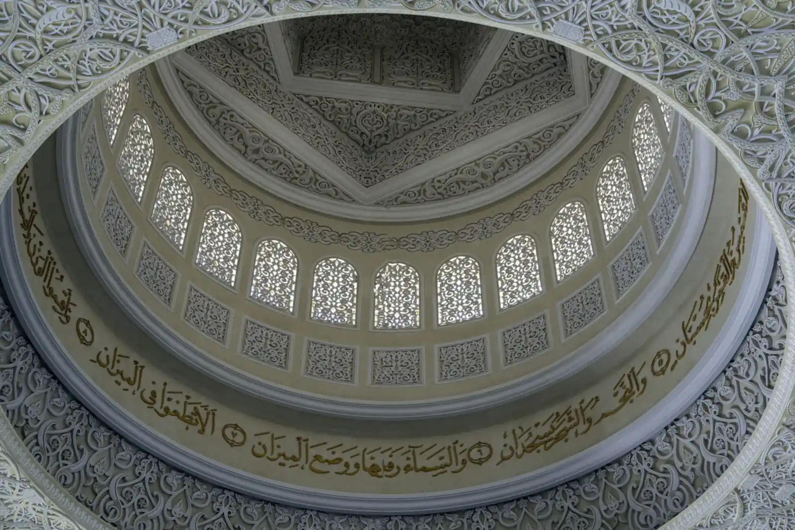

A house of Allah, first and always
Five daily prayers, Jumu’ah, Eid, and Qur’anic learning.

Maryam (peace be upon her) is the only woman named in the Qur’an, and its nineteenth surah carries her name. Our masjid bears it in that light — as the Qur’an honours her.
Photo: Nick Fewings / Unsplash
Surah Maryam · Surah Al-Imran
Maryam, the mother of the Prophet ‘Isa (peace be upon them both), is named dozens of times in the Qur’an — more than in any other scripture.
Surah Maryam, the nineteenth chapter, narrates her devotion, her seclusion, the miraculous birth of her son, and the defence her infant offered of her honour. Surah Al-Imran tells of her own birth and upbringing in the family of ‘Imran, dedicated to the worship of Allah from before she was born.

يَـٰمَرْيَمُ إِنَّ ٱللَّهَ ٱصْطَفَىٰكِ وَطَهَّرَكِ وَٱصْطَفَىٰكِ عَلَىٰ نِسَآءِ ٱلْعَـٰلَمِينَ
“O Maryam, indeed Allah has chosen you and purified you and chosen you above the women of the worlds.”
Her honour in Islam
In Islam, Maryam (peace be upon her) is honoured in her own right: a woman of truthfulness, purity and complete devotion to Allah, chosen above the women of the worlds. Her story is not borrowed — it is Qur’anic revelation, and every Muslim who recites Surah Maryam keeps her memory alive in worship.
Others, too, hold Mary in great esteem, and many visitors are surprised to discover how deeply Islam honours her. We welcome that curiosity: come and hear what the Qur’an itself says about her.
Our commitment
Five daily prayers, Jumu’ah, Eid, and Qur’anic learning.
Anyone who wants to see the masjid, ask a question about Islam, or arrange a school or community group visit is warmly welcome.
We teach Maryam’s story exactly as the Qur’an teaches it — nothing added, nothing softened.
Our masjid includes a dedicated women’s prayer section — a mosque named for a woman could settle for nothing less.
Visiting for the first time? You are welcome. See our visiting guide, or email admin@virginmarymosque.org.au to arrange a visit.
Learn more
Ask us anything — or begin with free, self-paced online courses from our da’wah partner IntroToIslam, covering the foundations of the faith and the life of the Prophet Muhammad , with weekly classes in person and on Zoom.